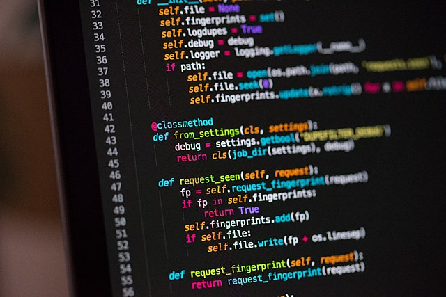
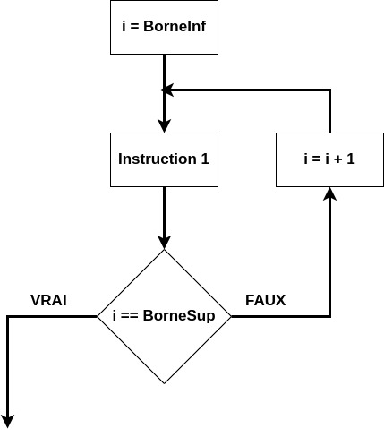
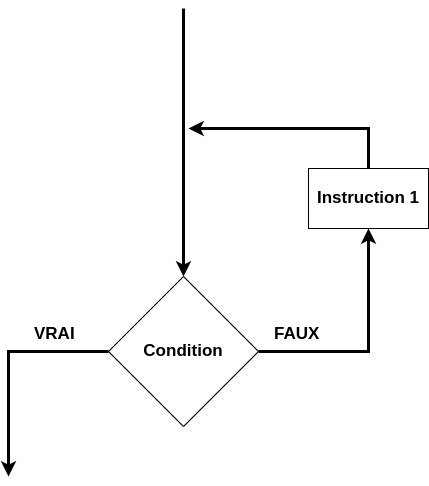
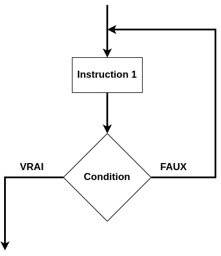

C1-ALGO-09 : Des algorigrammes à leur programmation#
Objectifs#
Être capable de programmer un algorigramme simple en Python 3
Les entrées sorties#

En python, une entrée se fait en utilisant la fonction input() alors qu’une sortie avec la fonction print()
nom = input('Bonjour, Quel est votre nom :')
---------------------------------------------------------------------------
StdinNotImplementedError Traceback (most recent call last)
Cell In[1], line 1
----> 1 nom = input('Bonjour, Quel est votre nom :')
File ~/.local/pipx/venvs/jupyter-book/lib/python3.11/site-packages/ipykernel/kernelbase.py:1274, in Kernel.raw_input(self, prompt)
1272 if not self._allow_stdin:
1273 msg = "raw_input was called, but this frontend does not support input requests."
-> 1274 raise StdinNotImplementedError(msg)
1275 return self._input_request(
1276 str(prompt),
1277 self._parent_ident["shell"],
1278 self.get_parent("shell"),
1279 password=False,
1280 )
StdinNotImplementedError: raw_input was called, but this frontend does not support input requests.
print("Votre nom est : "+nom)
Votre nom est : Vincent
Les structures de contrôle (CONDITIONS)#

En Python, une structure de contrôle, une condition s’écrit à l’aide des mots-clefs if,else :
if (condition == True) :
instruction 1
else:
instruction 2
age = 18
if (age < 18):
print('Vous êtes mineur')
else:
print('Vous êtes majeur')
Vous êtes majeur
Les structures répétitives (BOUCLES)#
Une boucle en programmation est une structure de contrôle permettant de répéter une ou plusieurs instructions sur la base d’une condition booléenne
Le nombre de répétitions est connnu : FOR#

Une telle boucle se déclare en Python en utilisant le mot-clef for :
for index in [sequence]:
instruction 1
La sequence représente une suite d’index. Elle se déclare en Python à l’aide du mot-clef range() qui est une fonction qui retourne la séquence.
BorneInf = 0
BorneSup = 10
for i in range(BorneInf,BorneSup):
print(i)
0
1
2
3
4
5
6
7
8
9
Ordre décroissant dans la séquence range()#
Il est évident qu’une boucle dont le nombre de répétitions est connue peut se faire dans l’ordre décroissant.

BorneInf = 10
BorneSup = 0
for i in range(BorneInf,BorneSup,-1):
print(i)
10
9
8
7
6
5
4
3
2
1
Le nombre de répétitions n’est pas connu : WHILE#
Il existe deux cas différents lorsque le nombre de répétitions n’est pas connu :
répéter un ensemble d’instructions tant que la condition est vraie
tant qu’une condition est vraie, alors on répète un ensemble d’instructions
Les deux sont très proches. La petite différence est que la seconde s’exécute au moins une fois
Répéter … jusqu’à …#

en Python, une boucle de répétition tant que s’écrit avec le mot-clef while :
while condition :
instruction 1
i = 10
while (i > 0) :
print(i)
i = i - 1
10
9
8
7
6
5
4
3
2
1
tant que … faire … fin tant que#
En Python 3, il n’existe pas de construction formelle de ce type de boucle (ce qui est le cas dans d’autres langages). Il est par contre relativement aisé de la simuler aussi avec une boucle while.

i = 10
while True :
print(i)
i = i + 1
if (i == 2):
break
ATTENTION : Boucles infinies#
Il est tout à fait possible d’écrire une boucle infinie. Cela signifie que le programme n’en sortira jamais et ne se terminera jamais.
while True:
instruction 1
instruction 2
etc..
Le seul moyen de quitter une boucle infinie est de combiner une boucle while avec une condition de sortie à l’intérieur de la boucle à l’aide du mot-clef break
x = 0
while (x < 10):
x = x + 1
print(x)
if (x == 5) :
break
1
2
3
4
5
Exercices#
Dans les algorithmes suivants, il vous est demandé de
dessiner l’algorigramme
écrire le code Python
Algorithme 1 : le four de cuisine#
Un four de cuisine possède un thermostat allant de 1 à 6. Les températures correspondantes sont les suivantes :
Thermostat |
1 |
2 |
3 |
4 |
5 |
6 |
|---|---|---|---|---|---|---|
Température |
30°C |
60°C |
90°C |
120°C |
150°C |
180°C |
La température du four augmente de 10 °C chaque minute.
On aimerait pouvoir connaître le temps de préchauffage du four avant de pouvoir mettre sa pizza.
Algorithme 2 : le feu de signalisation#
Un feu de signalisation placé à un carrefour suit toujours le même cycle :
Feu vert allumé, feu orange éteint, feu rouge éteint : 20 secondes
Feu vert éteint, feu orange allumé, feu rouge éteint : 5 secondes
Feu vert éteint, feu orange éteint, feu rouge allumé : 20 secondes
Pour le code Python, il est possible d’utiliser la fonction sleep(seconds) du module time. Par exemple :
import time
time.sleep(2.5)
Algorithme 3 : la piscine#

Solutions#
Algorithme 1 : le four#
thermostat = 5
temperature = 0
for i in range(0,thermostat*3) :
print("Après "+str(i)+" minutes, le four est à "+str(temperature)+" °C")
temperature = temperature + 10
Après 0 minutes, le four est à 0 °C
Après 1 minutes, le four est à 10 °C
Après 2 minutes, le four est à 20 °C
Après 3 minutes, le four est à 30 °C
Après 4 minutes, le four est à 40 °C
Après 5 minutes, le four est à 50 °C
Après 6 minutes, le four est à 60 °C
Après 7 minutes, le four est à 70 °C
Après 8 minutes, le four est à 80 °C
Après 9 minutes, le four est à 90 °C
Après 10 minutes, le four est à 100 °C
Après 11 minutes, le four est à 110 °C
Après 12 minutes, le four est à 120 °C
Après 13 minutes, le four est à 130 °C
Après 14 minutes, le four est à 140 °C
Algorithme 2 : le feu de signalisation#
import time
eteint = "éteint"
allume = "allumé"
feu_vert = eteint
feu_orange = eteint
feu_rouge = eteint
n = 0
# La boucle va se répéter 3 fois.
while (n<3) :
feu_vert = allume
feu_orange = eteint
feu_rouge = eteint
print("Le feu vert est "+feu_vert+", le feu orange est "+feu_orange+" le feu rouge est "+feu_rouge)
time.sleep(4)
feu_vert = eteint
feu_orange = allume
feu_rouge = eteint
print("Le feu vert est "+feu_vert+", le feu orange est "+feu_orange+" le feu rouge est "+feu_rouge)
time.sleep(1)
feu_vert = eteint
feu_orange = eteint
feu_rouge = allume
print("Le feu vert est "+feu_vert+", le feu orange est "+feu_orange+" le feu rouge est "+feu_rouge)
time.sleep(4)
n+=1
Le feu vert est allumé, le feu orange est éteint le feu rouge est éteint
Le feu vert est éteint, le feu orange est allumé le feu rouge est éteint
Le feu vert est éteint, le feu orange est éteint le feu rouge est allumé
Le feu vert est allumé, le feu orange est éteint le feu rouge est éteint
Le feu vert est éteint, le feu orange est allumé le feu rouge est éteint
Le feu vert est éteint, le feu orange est éteint le feu rouge est allumé
Le feu vert est allumé, le feu orange est éteint le feu rouge est éteint
Le feu vert est éteint, le feu orange est allumé le feu rouge est éteint
Le feu vert est éteint, le feu orange est éteint le feu rouge est allumé
Algorithme 3 : la piscine#
age_personne1 = 6
age_personne2 = 12
for i in range(1,3) :
if (age_personne1 >= 8) :
print("La personne agée de "+str(age_personne1)+" entre dans la piscine")
else :
if (age_personne2 >=10) :
print("La personne agée de "+str(age_personne1)+" entre dans la piscine parce qu'elle est accompagnée d'une personne âgée de 10 ans et plus")
else:
print("La personne 2 n'entre pas dans la piscine parce qu'elle n'est pas accompagnée d'une personne âgée de 10 ans et plus")
age = age_personne1
age_personne1 = age_personne2
age_personne2 = age
La personne agée de 6 entre dans la piscine parce qu'elle est accompagnée d'une personne âgée de 10 ans et plus
La personne agée de 12 entre dans la piscine